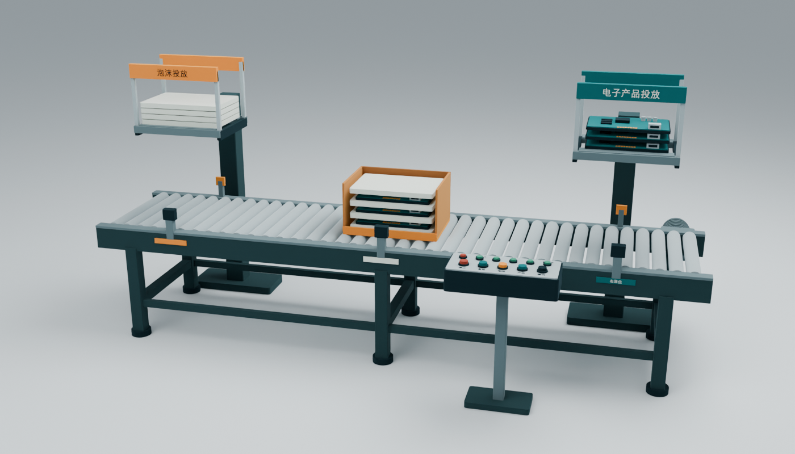
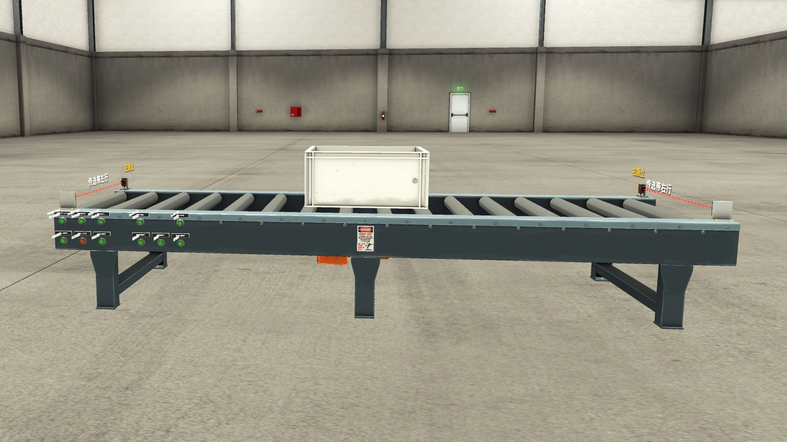

单箱自动装填任务
你已经完成输送带手动点动、限位和投料控制。本课设计单箱自动模式，空箱从中间启动，左右工位交替装填，完成后回中。
起点与终点中间箱位左侧投放4 份泡沫右侧投放3 件产品
小组课堂提交步序表、工序流程图、七次装填记录和设计核验记录。每一步写明动作、转换条件和下一步。

读任务、手动装箱、画草图，最后完成前测。
你已经完成输送带手动点动、限位和投料控制。本课设计单箱自动模式，空箱从中间启动，左右工位交替装填，完成后回中。
小组课堂提交步序表、工序流程图、七次装填记录和设计核验记录。每一步写明动作、转换条件和下一步。
按住左行或右行移动箱子，松开即停。用键盘可聚焦按钮并按住空格。箱子停在对应工位后，点击投料按钮。可拖动模型旋转，查看箱内层序。
在学习通提交手绘草图与个人工作页，完成下方前测。保存手绘草图，课堂上经小组讨论修订后再拍照上传绘图。
共 4 题。提交后查看得分和逐题解释。
自动模式程序结构设计
在工作页记录：图稿原写法、任务依据、修订结果。这里核对的是教学模型中的工序逻辑。
上传含 Mermaid 流程图的 Markdown 文件，或粘贴 Mermaid 源码。修改代码后可重新生成。
按顺序完成程序编写、虚拟调试、课后测试和提交。
依据课堂审定的工序流程图和步序表，独立编写单箱自动装箱程序。

对照预期，录入实际结果、问题和修订，完成后在「提交方式」导出 CSV。工程缺少的中间检测或投料执行器应写明“待验证”及取证方式。
完成 4 道课后测试题，检查对工序条件及异常原因的理解。
暂停冻结画面和工艺时钟，继续从原位置播放。单步跳至下一步起点。重置演示回到中间空箱；整箱重播从头播放。
实际 PLC 停止应撤销输送和投料命令并保留计数。处理半成品、换空箱并恢复中间位置后再复位清零。复位本身不启动运动。
点选模型或部件名称，查看作用及信号口径。